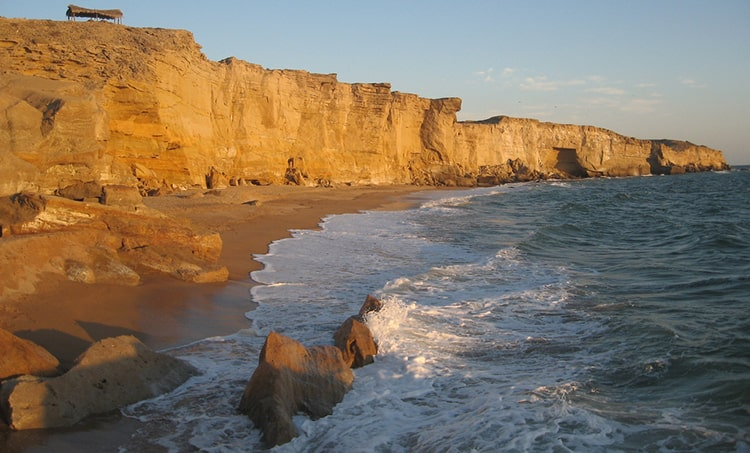

<div class="portfolio-single-load clearfix">
    <div class="custom-full-width-box">
        <div class="custom-container">
            <div class="custom-row align-items-center">
                <div class="custom-image-column">
                    
                </div>
                <div class="custom-text-column">
                    <h2 class="custom-heading">Crocodile Mountain Hike</h2>
                    <p class="custom-paragraph">
                        
                        Venture on an exhilarating hike to Crocodile Mountain, a majestic peak overlooking the azure waters of Gwadar Bay. As you ascend the rugged terrain, you'll be rewarded with panoramic views of the coastline and surrounding landscapes. Keep an eye out for local wildlife, including the elusive crocodiles that inhabit the area. After the hike, indulge in a well-deserved picnic amidst the natural beauty of this scenic vista, surrounded by the sights and sounds of nature.
                    </p>
                </div>
            </div>
        </div>
    </div><!-- .custom-full-width-box end -->

</div><!-- end single-project -->
